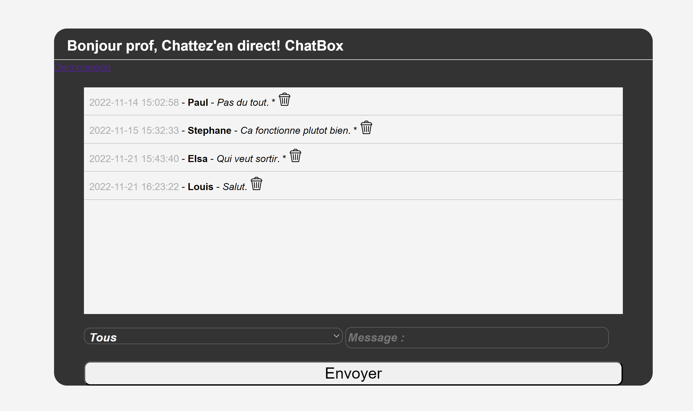
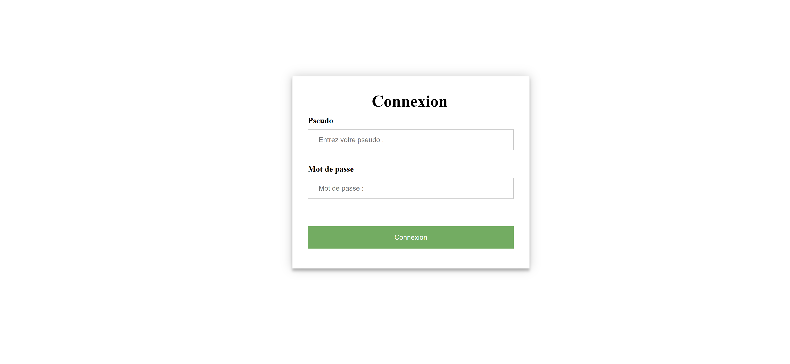
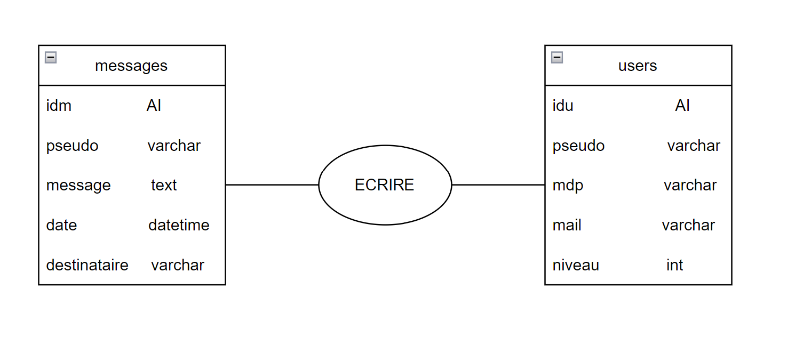
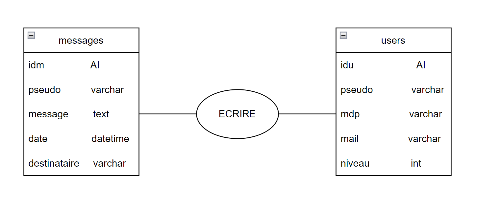
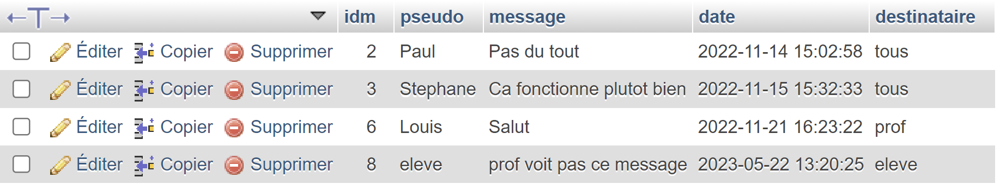
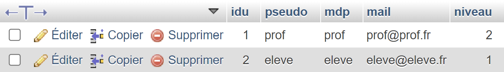

Au cours des deux ans de formation nous avons conçus un projet qui s'ameliorer en même temps que nos compétences.Cette application interactive offre une plateforme de discussion en temps réel, permettant aux utilisateurs d'échanger des messages.
En utilisant HTML et CSS, nous avons créé une interface attrayante et ergonomique pour offrir une expérience utilisateur agréable. Les fonctionnalités de mise en forme et de personnalisation ont été soigneusement intégrées pour rendre l'expérience de chat plus dynamique et interactive.
Grâce à PHP, nous avons développé la logique de traitement des messages, la gestion des utilisateurs et des sessions, la sauvegarde des conversations et supression des messages, ainsi que la possibilité d'envoyé des messages visible seulement par les profeseurs ou les élèves.
Dans le projet "ChatBox", j'ai également développé un espace de connexion pour permettre aux utilisateurs de se connecter à leur profil.
L'interface de l'espace de connexion permet aux utilisateurs de saisir leurs identifiants (nom d'utilisateur et mot de passe) pour accéder à leur compte. J'ai mis en place des fonctionnalités de validation pour garantir la saisie correcte des informations et sécuriser l'accès aux comptes des utilisateurs.
Le profil permet de se renseigner en temps que professeurs ou élèves, pour pouvoir soit envoyé un message global, seulement aux éleves ou seulement aux professeurs.
Sans profil il est impossible d'avoir accès a la ChatBox grâce à la creation d'une session PHP qui vérifie si un pseudo est renseigné, si il ne l'est pas un renvoi vers la page de connexion est effectué.
Le projet ChatBox que nous avons développé repose sur une base de données MySQL pour stocker et gérer les messages de la chatbox, ainsi que les informations des utilisateurs. Notre base de données est structurée avec deux tables principales : "message" et "users".
 

La table "message" enregistre les messages échangés dans la chatbox. Elle contient plusieurs colonnes essentielles. Tout d'abord, la colonne "idm" représente l'identifiant unique de chaque message enregistré. Ensuite, la colonne "pseudo" stocke le pseudo de l'utilisateur qui a envoyé le message. La colonne "message" enregistre le contenu du message lui-même. La colonne "date" stocke la date et l'heure à laquelle le message a été envoyé. Enfin, la colonne "destinataire" spécifie à qui le message est destiné. Il peut être défini comme tous le monde, seulement les profs ou seulement les élèves. Cette colonne permet de gérer les permissions d'accès aux messages en fonction des rôles des utilisateurs.
La table "users" contient les informations des utilisateurs nécessaires à la connexion. Elle peut contenir des colonnes telles que "idu", "pseudo", "mdp", "mail". Cette table permet d'authentifier les utilisateurs et de gérer leurs données personnelles.
Grâce à cette structure de base de données, notre application ChatBox est capable de stocker les messages échangés et de les afficher en fonction des autorisations d'accès spécifiées. De plus, les informations des utilisateurs sont enregistrées de manière sécurisée pour assurer une connexion fiable et protégée.